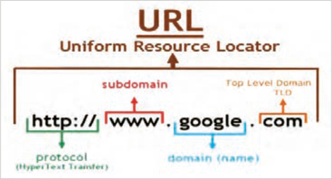

وب دارای مفاهیم کلیدی مختلفی است که آگاهی نسبت به آنها برای هر توسعهدهندۀ وب (Webdeveloper) ضروری است. در ادامه، به شرح این مفاهیم پرداخته میشود:
طراح وب (Webdesigner): فرد یا تیمی که مسئول طراحی ظاهر نمایشی وبسایت است. این حرفه ترکیبی از طراحی گرافیکی، طراحی تجربه کاربری (UX) و طراحی رابط کاربری (UI)، ایجاد wireframe و نمونه اولیه است.
تجربه کاربری (UX): تجربهای که کاربر بعد از بازدید از وبسایت برای دسترسی به اطلاعات، محصولات و خدمات کسب میکند.
رابط کاربری (UI): عناصر تعاملی صفحه مانند دکمهها، فرمها و منوها که کاربران بهوسیله آنها با وبسایت تعامل دارند.
Front-end: بخشی از وبسایت که ارتباط مستقیمی با کاربر دارد. مباحث بخش فرانتاند شامل ظاهر صفحه وب، رابط کاربری (UI) و تجربه کاربری (UX) میشود.
Back-end: بخش پشتصحنۀ وبسایت یا اپلیکیشن که شامل منطق اصلی برنامه، پردازش دادهها و ارتباط با پایگاه داده است و کاربر تعامل مستقیمی با آن ندارد.
توسعهدهندۀ وب (Webdeveloper): فرد یا تیمی که طرح اولیۀ وبسایت را با استفاده از زبانهای برنامهنویسی، به صفحات وب قابل استفاده تبدیل میکند. توسعهدهندۀ وب میتواند نقش طراح وب را نیز داشته باشد. وظایف اصلی توسعه دهندۀ وب شامل موارد زیرمیباشد:
1 توسعهدهندۀ سمت کاربر (Front-end-developer): روی ظاهر سایت و عناصری تمرکز دارد که کاربر مستقیمًا با آنها سروکار دارد.
2 توسعهدهندۀ سمت سرور (Back-end-developer): روی مباحث سمت سرور مانند مدیریت پایگاه داده و پردازش دادههای کاربران تمرکز دارد.
دامنه (Domain): نامی منحصربهفرد که برای دسترسی به یک وبسایت استفاده میشود، مانند .google.com کاربران با استفاده از نام دامنه وارد یک سایت میشوند. نام دامنه، جایگزینی قابل فهم برای آدرسهای عددی IP است که بهخاطر سپردن آدرس سایت را برای کاربران سهولت میبخشد.
URL: آدرس منحصربهفردی که برای پیدا کردن و شناسایی یک منبع خاص (مثل صفحه وب، عکس، ویدئو یا فایل) در اینترنت استفاده میشود. URL مخفف UniformResourceLocator است (شکل2).
صفحه ۸۷
Host: فضایی برای ذخیرهسازی اسناد وبسایت است، بهطوریکه امکان دسترسی به منابع سایت از طریق اینترنت فراهم گردد. تمام فایلهای یک سایت (شامل فایل های HTML، CSS، اسکریپتها، تصاویر و ...) باید روی یک رایانه وبسرور ذخیره گردند تا کاربران بتوانند با وارد کردن آدرس سایت به محتوای آن دسترسی پیدا کنند.

شکل 2
Localhost (هاست محلی): یک سیستم رایانهای مجهز به نرمافزار وبسرور است که برای اجرای کدهای سمت سرور (Back-End)، ایجاد و مدیریت پایگاه دادهها استفاده میشود. هاست محلی صرفًا برای تمرین، آزمایش و رفع اشکال صفحات وبسایت کاربرد دارد. نرمافزارهای وبسرور مختلفی وجود دارند که میتوانند یک سیستم خانگی را به وبسرور تبدیل کنند، اما نکته مهم این است که تمام وبسرورهایی که در سطح اینترنت پاسخگوی کاربران هستند، دارای IP اینترنتی هستند؛ بنابراین سیستمهای خانگی و کلاس درس که فاقد IP اینترنت هستند، امکان پاسخدهی به کاربران راه دور را ندارند.
نکته
پس از طراحی و آزمایش صفحات سایت روی لوکال هاست، میتوانید محتوای سایت خود را به یک وب هاست یا وب سرور انتقال دهید. دسترسی به یک وب سرور نیازمند پرداخت هزینه است، اما برخی شرکتها امکان استفاده از هاستهای رایگان را با امکانات و منابع محدود فراهم میکنند که برای یک پروژه واقعی مناسب نیستند. مناسبترینهاست برای سایتهایی که منابع سخت افزاری قدرتمندی نیاز ندارند هاستهای اشتراکی هستند.
هاست اشتراکی:
شرکتهای هاستینگ طرحهای مختلفی را برای ارائه خدمات خود دارند که هر طرح (Plan) دارای امکانات سختافزاری و پهنای باند متفاوتی است. از جمله این طرحها میتوان به هاست اشتراکی، سرور مجازی، سرور اختصاصی و سرور ابری اشاره نمود. در طرح هاست اشتراکی امکانات سختافزاری هاست مانند فضای دیسک، پهنای باند، CPU و حافظه RAM بین چندین وب سایت تقسیم میشود. به این ترتیب تمام توان سختافزاری وبسرور صرف پاسخدهی به درخواستهای کاربران یک سایت نمیشود. به همین دلیل چنین هاستهایی برای سایتهای کوچک با ترافیک محدود مناسب هستند.
صفحه ۸۸
طراحی واکنشگرا (ResponsiveDesign): یک روش طراحی صفحه که امکان تطبیقپذیری خودکار صفحه را بر اساس اندازه صفحه نمایش (دستگاههای مختلف مانند موبایل، تبلت و دسکتاپ) فراهم میکند.
سئو (SEO): مجموعهای از تکنیکها برای بهبود رتبه وبسایت در نتایج موتورهای جستوجو است. سئو شامل بهینهسازی محتوا، ساختار URL و استفاده از متاتگها و ... است.
دسترسپذیری (Accessibility): طراحی وبسایت به گونهای که برای همه کاربران (از جمله افراد دارای ناتوانیهای جسمی یا بینایی) قابل دسترسی باشد.
پایگاهداده: بسیاری از وبسایتها برای ذخیره و مدیریت اطلاعات از پایگاهدادهها (Database) استفاده میکنند. پایگاهدادهها میتواند شامل اطلاعات کاربران، محصولات، مقالات و محتواهای دیگر باشند.
کنترل نسخه: سیستمهای کنترل نسخه امکان مدیریت تغییرات کد را فراهم میکنند، بهگونهای که بازگشت به نسخههای قبلی بهراحتی امکانپذیر باشد.
کنجکاوی
1 در مورد پروتکل SSL تحقیق کنید و نتیجه آن را در کلاس ارائه دهید.
2 درباره انواع وبسایت و کاربرد آنها تحقیق کنید و نتیجه آن را در کلاس ارائه دهید.
فرایند طراحی سایت طراحی و پیادهسازی یک وبسایت، فرایندی مرحلهبهمرحله است که هر مرحله نقش مهمی در موفقیت نهایی پروژه دارد. اگر این مراحل بهدرستی و با ترتیب مناسب انجام شوند، نتیجۀ کار سایتی کاربردی، زیبا و قابل گسترش خواهد بود.
مراحل کلی طراحی سایت فرایند طراحی سایت بهصورت خلاصه شامل مراحل زیر است:
تعریف هدف و نیازمندیها طراحی نقشه سایت (sitemap) ایجاد وایر فریم (wireframe) ایجاد ساختار صفحات با HTML طراحی ظاهر صفحات با CSS افزودن تعاملات کاربر با JavaScript طراحی پایگاه داده (مانند جدول کاربران، محصولات و سفارشها) ایجاد ارتباط بین صفحات و پایگاه داده افزودن قابلیت ورود و ثبتنام کاربران پیادهسازی سبد خرید و پرداخت تست عملکرد سایت رفع خطاها و بهینهسازی انتشار سایت روی سرور
صفحه ۸۹
تعریف هدف و نیازمندیها: پیش از شروع طراحی یا نوشتن کد صفحات سایت، باید مشخص شود که وبسایت به چه منظور و برای چه گروهی از کاربران طراحی میشود. شروع طراحی بدون شناخت نیازها و تعیین مأموریت وبسایت، معموًلا باعث بروز مشکلات اساسی در حین پیادهسازی پروژه و نیاز به طراحی مجدد میشود. به همین دلیل، اولین و مهمترین گام در طراحی هر وبسایت، تعریف هدف و نیازمندیهای آن است.
تعیین هدف پروژه: در این مرحله باید به پرسشهای زیر پاسخ داده شود:
هدف از ایجاد سایت چیست؟
چه نوع کالا یا خدماتی در سایت ارائه میشود؟
کاربران اصلی سایت چه کسانی هستند؟
چه امکاناتی باید در سایت وجود داشته باشد؟
مثال
یک تیم طراح و توسعهدهندۀ وب قصد دارد وب سایتی را برای فروش کتابهای درسی ایجاد نماید.
اغلب کاربران این سایت هنرآموزان و هنرجویان هستند. امکانات مورد نیاز شامل ثبت نام کاربران، نمایش کالاها، سبد خرید و پرداخت آنلاین است.
تحلیل نیازمندیها: در این مرحله، نیازهای سایت از دو جنبه بررسی میشود:
الف) نیازمندیهای کاربر (UserRequirements): این نیازمندیها شامل ویژگیها و امکاناتی است که کاربران در هنگام استفاده از سایت به آنها نیاز دارند (جدول1).
جدول 1
توضیح
نیاز کاربر
کاربر بتواند حساب کاربری ایجاد کرده و وارد سایت شود.
ثبتنام و ورود جستوجوی
امکان جستوجو براساس نام یا دستهبندی کالا وجود داشته باشد.
محصول
کاربر بتواند محصولات را به سبد خرید اضافه کند.
سبد خرید
فرایند خرید از طریق درگاه پرداخت انجام شود.
پرداخت اینترنتی
کاربر بتواند سفارشهای قبلی خود را مشاهده کند.
مشاهده سفارشها
صفحه ۹۰
ب) نیازمندیهای فنی (TechnicalRequirements): این نیازمندیها شامل زبانهای نشانهگذاری و برنامهنویسی، سیستم مدیریت پایگاهها و توجه به امنیت و گسترشپذیری وبسایت است (جدول 2).
جدول 2
توضیح
مورد Python (Django)زبان برنامهنویسی SQLite یا MySQLپایگاه داده HTML، CSS، Bootstrapطراحی ظاهر رمزنگاری رمز عبور کاربران امنیت
امکان افزودن محصولات و امکانات جدید در آینده
قابلیت گسترش
طراحی نقشۀ سایت (SiteMap): پس از مشخص شدن هدف و نیازهای وبسایت، طراحی نقشۀ سایت امری ضروری است. نقشۀ سایت ساختار صفحات، ارتباطات میان آنها و مسیر حرکت کاربر را درون سایت مشخص میکند. طراحی صحیح نقشۀ سایت موجب درک بهتر ساختار سایت و ساده شدن فرایند طراحی و پیادهسازی آن میگردد.
مراحل طراحی نقشۀ سایت
کار کارگاهی
مرحلۀ ۱: مشاهده و بررسی سایتهای فروشگاهی با راهنمایی هنرآموز خود، دو یا سه سایت فروشگاهی ساده را بررسی کنید.
بهعنوان نمونه: فروشگاه موبایل، فروشگاه لباس، فروشگاه لوازم دیجیتال مواردی که باید بررسی شود: چه صفحاتی در منوی سایت وجود دارد؟ کاربر از صفحۀ اصلی به کدام صفحات هدایت میشود؟ فرایند ورود کاربر، انتخاب کالا و استفاده از سبد خرید چگونه انجام میشود؟
ظاهر سایت ساده است یا شلوغ؟
مرحلۀ ۲: شناسایی صفحات اصلی سایت در این مرحله، لازم است صفحات مشترک میان سایتها بررسیشده را شناسایی و یادداشت نمایید.
نمونهای از صفحات رایج در یک فروشگاه اینترنتی عبارتاند از:
Home
Products
Product Details
Cart
Login / Register
User Profile
About / Contact
صفحه ۹۱
مرحله ۳: ترسیم نقشۀ سایت (SiteMap) درا ین مرحله نقشه سایت را بهصورت نوشتاری یا گرافیکی
Home
طراحی کنید. یک روش ساده برای ترسیم نقشه این است که صفحۀ اصلی در بالای نقشه و سایر صفحات
Products details
Products
بهصورت زیر شاخه در زیر صفحۀ اصلی قرار گیرند.
Cart
User proflie
Login/Register
شکل روبهرو یک نقشۀ نوشتاری محسوب میشود:
علاوه بر روش نوشتاری، نقشه سایت میتواند بهصورت
Contact us
ترسیمی با استفاده از کادرها و فلشها نمایش داده شود.
مرحله ۴: بیان مسیر حرکت کاربر در این مرحله، مسیر حرکت کاربر در سایت توضیح داده میشود. برای توصیف مسیر به موارد زیر توجه کنید:
کاربر از چه صفحهای وارد سایت میشود؟ چگونه محصول موردنظر را انتخاب میکند؟ از چه مسیری به سبد خرید میرسد؟
در چه مرحلهای وارد حساب کاربری میشود؟
مثال زیر یک نمونه از توصیف مسیر حرکت کاربر است:
کاربر ابتدا وارد صفحۀ اصلی سایت میشود، سپس به صفحۀ محصولات مراجعه کرده و یک محصول را انتخاب میکند. پس از مشاهدۀ جزئیات محصول، آن را به سبد خرید اضافه کرده و در نهایت برای ثبت سفارش وارد حساب کاربری میشود.
طراحی ظاهر صفحات
جدول3
پس از مشخص شدن هدف و نیازمندیها، نوبت آن
ابزارهای طراحی ظاهر سایت (فرانتاند)
است که ظاهر صفحات وب سایت طراحی شود.
هرچقدر ظاهر سایت زیباتر و منظمتر باشد، کاربران
کاربرد
زبان
بیشتری جذب سایت خواهند شد. در یک سایت
ساختار و عناصر صفحه (مثل متن،
فروشگاهی، زیبایی سایت میتواند منجر به جذب
HTML
تصویر، جدول، دکمه)
مشتری و فروش بیشتر شود.
زیباسازی وکنترل ظاهر عناصر شامل
برای ایجاد عناصر درون صفحات وب از فرازبان
CSS
تنظیم رنگها، فونتها ، اندازهها،
HTML و برای سبکدهی به عناصر صفحه از زبان
چیدمان و ...
توصیفی CSS استفاده میشود (جدول3).
صفحه ۹۲
طراحی سایت بهصورت تیمی: فرایند طراحی سایت شامل مراحل متعددی است که هر کدام نیازمند مهارتهای تخصصی هستند. به همین دلیل، طراحی سایت معمولاً بهصورت تیمی انجام میشود و هر عضو مسئولیت مشخصی دارد.
نقشهای اصلی در تیم طراحی سایت
1 طراح تجربه کاربری (UXDesigner): تحلیل نیاز کاربران و بهینهسازی تجربه استفاده از سایت
2 طراح رابط کاربری (UIDesigner): طراحی عناصر بصری مانند رنگها، فونتها، دکمهها و فرمها
3 توسعهدهندۀ فرانتاند (Front-EndDeveloper): پیادهسازی بخش ظاهری و تعاملی سایت
4 توسعهدهندۀ بکاند (Back-EndDeveloper): برنامهنویسی سمت سرور، مدیریت پایگاه داده و امنیت
5 متخصص محتوا (ContentSpecialist): تحقیق کلمات کلیدی و تولید محتوای متنی جذاب
6 متخصص سئو (SEOSpecialist): بهینهسازی سایت برای موتورهای جستوجو
بسته به حجم کار پروژه، بودجه و تعداد نفرات تیم طراح و توسعهدهنده وبسایت، هر نقش میتواند به یک یا چند نفر اختصاص داده شود. در پروژههای کوچک ممکن است یک فرد چندین نقش را بر عهده داشته باشد. در جدول 4 ابزارهای متداول مورد استفاده توسط هر یک از نقشهای تیم طراحی سایت معرفی شده است. این ابزارها به بهبود کیفیت پروژه و تسهیل همکاری بین اعضای تیم کمک میکنند.
جدول 4 ابزارهای متداول در طراحی سایت
نقش
ابزارها
Photoshop ،InVision ،Sketch ،Adobe XD ،Figma
طراح UX و UI توسعهدهندۀ فرانتاندBootstrap ،JavaScript ،CSS ،HTML
توسعهدهندۀ بکاندDjango) ،Python ،Flask( ،JavaScript (Node.js)
ویرایشگر کدAtom ،Sublime Text ،Visual Studio Code
مرورگر و ابزار توسعهMicrosoft Edge ،Mozilla Firefox ،Google Chrome
پلتفرمهای مدیریت محتوا و تولید محتوای
Grammarly ،Google Docs ،WordPress
تحت وب
Yoast SEO ،Moz ،SEMrush ،Google Analytics
متخصص سئو
سایر ابزار مورد استفاده تیم طراحیCyberduck ،FileZilla
GitHub ،Git
کنترل نسخه
Page 86
Some main concepts of web design
The web has various key concepts that awareness of them is essential for every web developer (Webdeveloper). In the following, these concepts are explained:
Web designer (Webdesigner): The person or team responsible for designing the visual appearance of the website. This profession is a combination of graphic design, user experience (UX) design and user interface (UI) design, creating a wireframe and a prototype.
User experience (UX): The experience the user gains after visiting the website to access information, products, and services.
User interface (UI): Interactive elements of the page such as buttons, forms, and menus that users interact with the website by means of.
Front-end: The part of the website that has a direct connection with the user. Topics in the front-end section include the appearance of the web page, the user interface (UI), and the user experience (UX).
Back-end: The behind-the-scenes part of the website or application that includes the main program logic, data processing, and connection to the database, and with which the user has no direct interaction.
Web developer (Webdeveloper): The person or team that turns the initial design of the website into usable web pages using programming languages. The web developer can also have the role of web designer. The main duties of a web developer include the following:
1 Client-side developer (Front-end-developer): Focuses on the appearance of the site and the elements that the user deals with directly.
2 Server-side developer (Back-end-developer): Focuses on server-side topics such as database management and processing users’ data.
Domain (Domain): A unique name used to access a website, such as .google.com Users enter a site using the domain name. The domain name is an understandable substitute for numeric IP addresses that makes remembering the site address easier for users.
URL: A unique address used to find and identify a particular resource (such as a web page, photo, video, or file) on the Internet. URL stands for UniformResourceLocator (Figure 2).
Page 87
Host: Space for storing the documents of a website so that access to the site’s resources through the Internet is provided. All files of a site (including HTML, CSS files, scripts, images, and so on) must be stored on a web-server computer so that users can access its content by entering the site address.
Figure 2
Localhost (local host): A computer system equipped with web-server software that is used to run server-side (Back-End) code and to create and manage databases. A local host is used only for practice, testing, and debugging website pages. There are various web-server software programs that can turn a home system into a web server, but the important point is that all web servers that respond to users across the Internet have an Internet IP; therefore home systems and classroom systems that lack an Internet IP cannot respond to remote users.
Note
After designing and testing the site pages on localhost, you can transfer your site’s content to a web host or web server. Access to a web server requires payment, but some companies provide the possibility of using free hosts with limited features and resources that are not suitable for a real project. The most suitable hosts for sites that do not need powerful hardware resources are shared hosts.
Shared host:
Hosting companies have various plans for offering their services, and each plan (Plan) has different hardware features and bandwidth. Among these plans one can mention shared host, virtual server, dedicated server, and cloud server. In a shared-host plan, the host’s hardware features such as disk space, bandwidth, CPU, and RAM memory are divided among several websites. In this way, the entire hardware power of the web server is not spent responding to the requests of the users of one site. For this reason such hosts are suitable for small sites with limited traffic.
Page 88
Responsive design (ResponsiveDesign): A method of page design that provides automatic adaptability of the page based on the size of the display (different devices such as mobile, tablet, and desktop).
SEO (SEO): A set of techniques for improving a website’s ranking in search engine results. SEO includes optimizing content, URL structure, and the use of meta tags, and so on.
Accessibility (Accessibility): Designing a website so that it is accessible for all users (including people with physical or visual disabilities).
Database: Many websites use databases (Database) to store and manage information. Databases can include information about users, products, articles, and other content.
Version control: Version-control systems make it possible to manage code changes so that returning to previous versions is easily possible.
Try this
1 Research the SSL protocol and present the result in class.
2 Research types of websites and their uses and present the result in class.
The process of site design Designing and implementing a website is a step-by-step process in which each stage plays an important role in the final success of the project. If these stages are done correctly and in the proper order, the result of the work will be a practical, beautiful, and extensible site.
Overall stages of site design The process of site design, in summary, includes the following stages:
Defining the goal and requirements Designing the site map (sitemap) Creating a wireframe (wireframe) Creating the structure of pages with HTML Designing the appearance of pages with CSS Adding user interactions with JavaScript Designing the database (such as tables for users, products, and orders) Creating a connection between the pages and the database Adding user login and registration Implementing a shopping cart and payment Testing the site’s performance Fixing errors and optimizing Publishing the site on the server
Page 89
Defining the goal and requirements: Before starting to design or write the code of the site pages, it must be clear for what purpose and for what group of users the website is being designed. Starting design without recognizing the needs and determining the mission of the website usually causes fundamental problems during project implementation and the need to redesign. For this reason, the first and most important step in designing any website is defining its goal and requirements.
Determining the project goal: In this stage the following questions must be answered:
What is the goal of creating the site?
What kind of goods or services are offered on the site?
Who are the main users of the site?
What features must exist on the site?
Example
A team of web designers and developers intends to create a website for selling textbooks.
Most users of this site are instructors and students. Required features include user registration, displaying goods, a shopping cart, and online payment.
Analyzing requirements: In this stage, the site’s needs are examined from two aspects:
a) User requirements (UserRequirements): These requirements include the features and capabilities that users need when using the site (Table 1).
Table 1
Explanation
User need
The user should be able to create a user account and log in to the site.
Registration and login Search
The ability to search based on the name or category of goods should exist.
Product
The user should be able to add products to the shopping cart.
Shopping cart
The purchase process should be carried out through a payment gateway.
Internet payment
The user should be able to view their previous orders.
Viewing orders
Page 90
b) Technical requirements (TechnicalRequirements): These requirements include markup and programming languages, the database management system, and attention to the security and extensibility of the website (Table 2).
Table 2
Explanation
Item Python (Django) programming language SQLite or MySQL database HTML, CSS, Bootstrap appearance design Encrypting users’ passwords security
The possibility of adding new products and features in the future
Extensibility
Designing the site map (SiteMap): After the goal and needs of the website have been specified, designing the site map is essential. The site map specifies the structure of the pages, the connections among them, and the path of the user’s movement within the site. Correct design of the site map leads to a better understanding of the site’s structure and simplifies the process of designing and implementing it.
Stages of designing the site map
Workshop
Stage 1: Observing and examining store sites With guidance from your instructor, examine two or three simple store sites.
For example: a mobile store, a clothing store, a digital accessories store Items that should be examined: What pages exist in the site menu? Which pages is the user directed to from the home page? How are the process of user login, selecting goods, and using the shopping cart done?
Is the appearance of the site simple or busy?
Stage 2: Identifying the main pages of the site In this stage, you need to identify and note the pages common among the sites you examined.
Examples of common pages in an online store are:
Home
Products
Product Details
Cart
Login / Register
User Profile
About / Contact
Page 91
Stage 3: Drawing the site map (SiteMap) In this stage design the site map in written or graphic form
Home
. A simple method for drawing the map is that the home page is at the top of the map and the other pages
Products details
Products
are placed as sub-branches under the home page.
Cart
User proflie
Login/Register
The figure opposite is considered a written map:
In addition to the written method, the site map can be
Contact us
displayed graphically using boxes and arrows.
Stage 4: Stating the path of the user’s movement In this stage, the path of the user’s movement on the site is explained. To describe the path, pay attention to the following:
From which page does the user enter the site? How does the user select the desired product? By what path does the user reach the shopping cart?
At what stage does the user enter their user account?
The following example is a sample description of the path of the user’s movement:
The user first enters the site’s home page, then goes to the products page and selects a product. After viewing the product details, the user adds it to the shopping cart and finally logs in to their user account to place the order.
Designing the appearance of pages
Table 3
After the goal and requirements have been specified, it is time
Tools for designing the appearance of the site (front-end)
to design the appearance of the website pages.
The more beautiful and orderly the appearance of the site is, the more users
In practice
Language
will be attracted to the site. On a store
Structure and elements of the page (such as text,
site, the beauty of the site can lead to attracting
HTML
image, table, button)
customers and more sales.
Beautifying and controlling the appearance of elements including
To create elements inside web pages the markup language
CSS
setting colors, fonts, sizes,
HTML is used, and to style the page elements the
layout, and so on
descriptive language CSS is used (Table 3).
Page 92
Designing a site as a team: The process of site design includes numerous stages, each of which requires specialized skills. For this reason, site design is usually done as a team and each member has a specific responsibility.
Main roles in the site design team
1 User experience designer (UXDesigner): Analyzing users’ needs and optimizing the experience of using the site
2 User interface designer (UIDesigner): Designing visual elements such as colors, fonts, buttons, and forms
3 Front-end developer (Front-EndDeveloper): Implementing the visual and interactive part of the site
4 Back-end developer (Back-EndDeveloper): Server-side programming, database management, and security
5 Content specialist (ContentSpecialist): Researching keywords and producing attractive text content
6 SEO specialist (SEOSpecialist): Optimizing the site for search engines
Depending on the volume of project work, the budget, and the number of people on the website design and development team, each role can be assigned to one or more people. In small projects one person may take on several roles. In Table 4 the common tools used by each of the roles on the site design team are introduced. These tools help improve the quality of the project and facilitate collaboration among team members.
Table 4 Common tools in site design
Role
Tools
Photoshop ،InVision ،Sketch ،Adobe XD ،Figma
UX and UI designer Front-end developer Bootstrap ،JavaScript ،CSS ،HTML
توسعهدهندۀ بکاندDjango) ،Python ،Flask( ،JavaScript (Node.js)
ویرایشگر کدAtom ،Sublime Text ،Visual Studio Code
مرورگر و ابزار توسعهMicrosoft Edge ،Mozilla Firefox ،Google Chrome
Content management platforms and producing
Grammarly ،Google Docs ،WordPress
web-based content
Yoast SEO ،Moz ،SEMrush ،Google Analytics
SEO specialist
Other tools used by the design team Cyberduck ،FileZilla